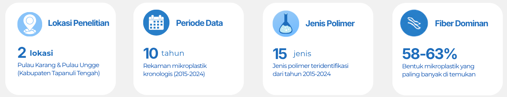
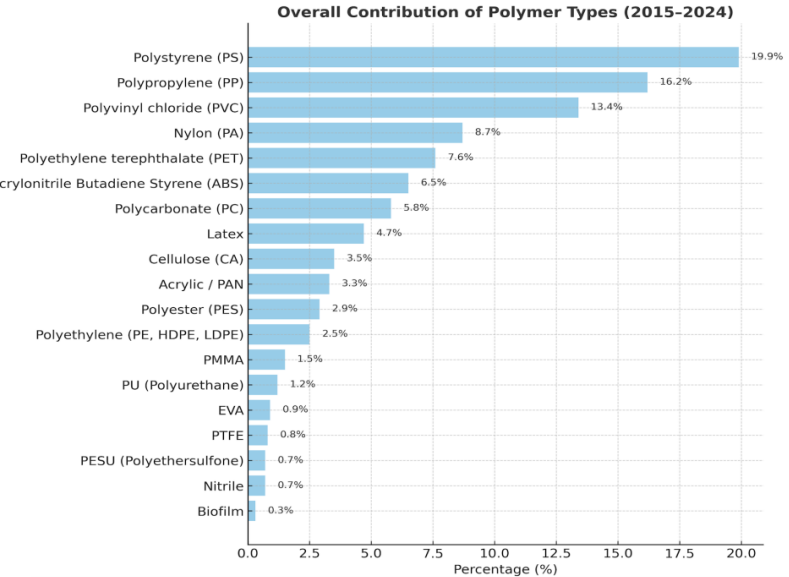
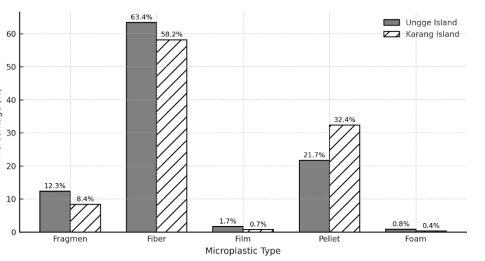
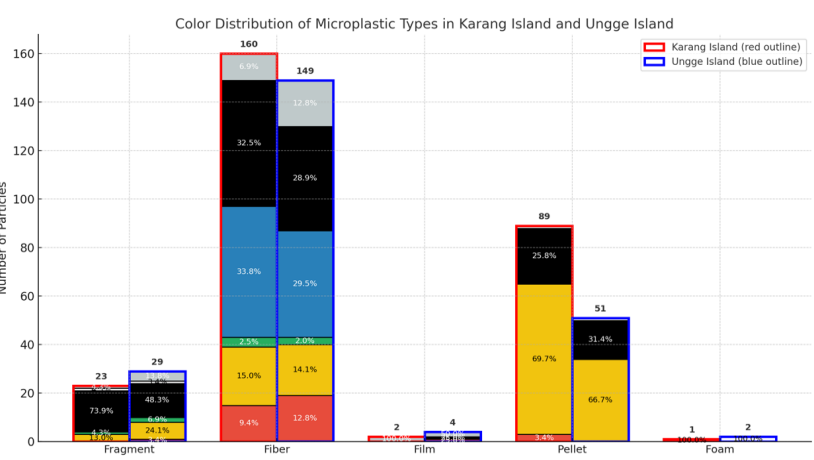

Highlight Penelitian
Penelitian ini menunjukkan bahwa kerangka karang (Porites sp.) mampu merekam sejarah pencemaran mikroplastik dari tahun ke tahun. Fakta ini memperlihatkan bahwa pencemaran plastik di wilayah pesisir Tapanuli Tengah semakin kompleks seiring meningkatnya aktivitas manusia.

Hasil & Visualisasi Data

Kontribusi persentase keseluruhan dari jenis polimer dominan yang diidentifikasi di seluruh sampel (2015 - 2024).

Persentase mikroplastik secara keseluruhan berdasarkan tipe morfologi (%) di Pulau Karang dan Pulau Ungge.

Jumlah total partikel berdasarkan warna dan tipe morfologi di kedua pulau.